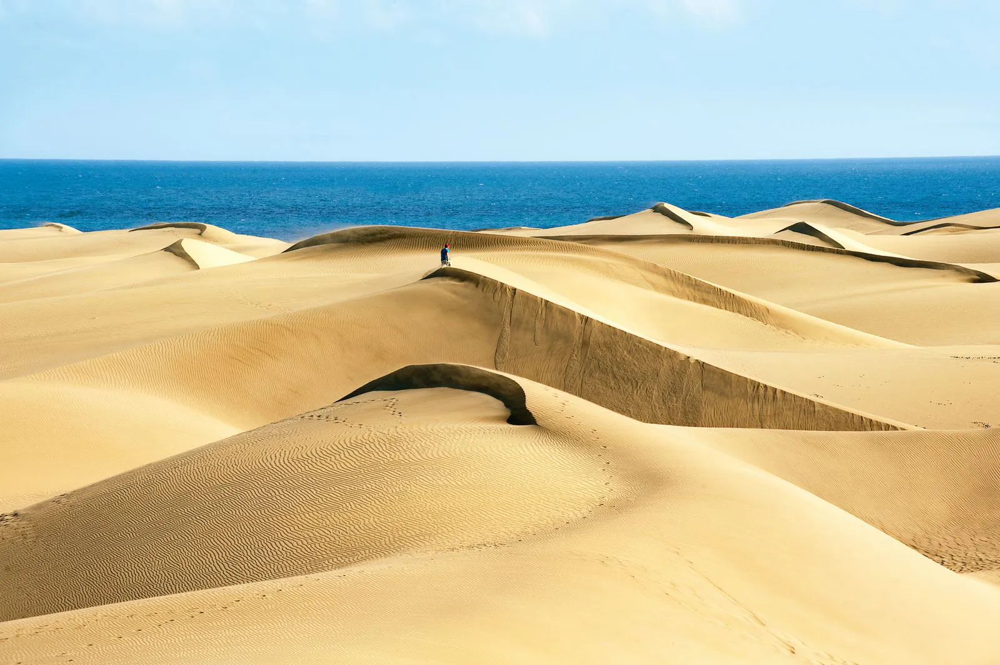
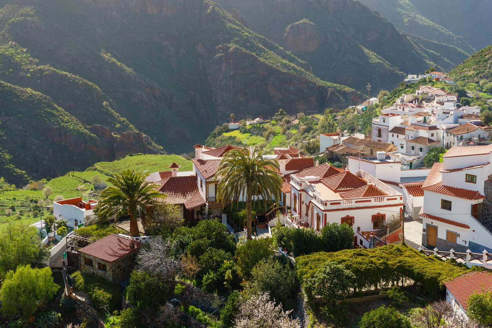
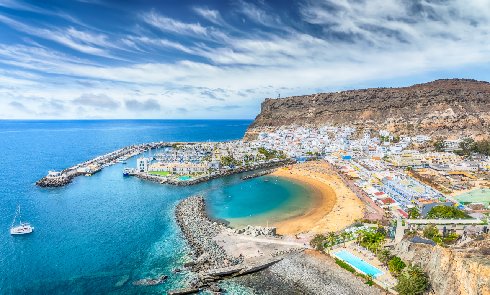
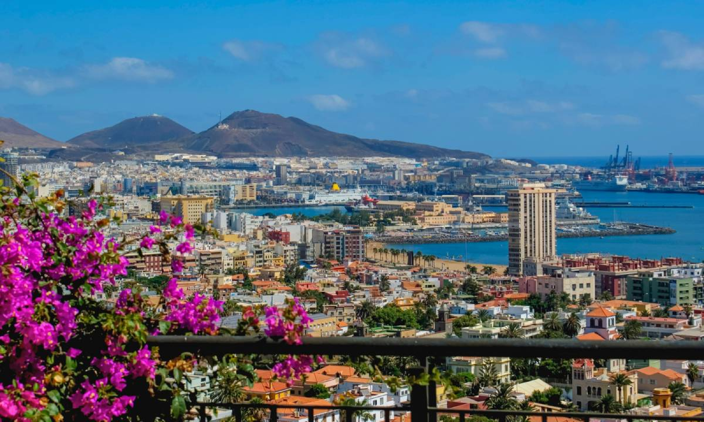

Odkryj Gran Canarie!
Gran Canaria, trzecia co do wielkości wyspa archipelagu Wysp Kanaryjskich, to miejsce, które zachwyca swoją różnorodnością.
Nazywana "kontynentem w miniaturze", oferuje spektakularne krajobrazy, od złocistych plaż po zielone wąwozy, skaliste klify i pustynne wydmy.
Dzięki temu każdy znajdzie tu coś dla siebie, niezależnie od tego, czy marzy o relaksie, aktywnym wypoczynku czy bliskim kontakcie z naturą.
Na południu wyspy królują słynne wydmy Maspalomas – miejsce, które przypomina saharyjską pustynię, a jednocześnie oferuje luksusowe kurorty, takie jak Playa del Inglés czy Puerto Rico, z bogatym zapleczem turystycznym.
Z kolei północ i interior wyspy zapraszają do odkrywania tradycyjnych wiosek, takich jak Tejeda, oraz zapierających dech w piersiach krajobrazów, w tym majestatycznego wulkanicznego monolitu Roque Nublo – symbolu wyspy.
Gran Canaria to także raj dla miłośników sportów wodnych, takich jak windsurfing, nurkowanie czy żeglarstwo. Wyspa oferuje świetne warunki przez cały rok, a w jej wodach można spotkać delfiny i wieloryby.
Stolica wyspy, Las Palmas de Gran Canaria, to kosmopolityczne miasto z piękną plażą Las Canteras, malowniczą starówką Vegueta oraz bogatą ofertą kulturalną i gastronomiczną. Miłośnicy historii i kultury mogą odkryć ślady kolonialnej przeszłości i odwiedzić Dom Kolumba, związany z podróżami wielkiego odkrywcy.
Niezależnie od tego, czy szukasz spokoju na plaży, emocjonujących przygód czy inspirujących widoków, Gran Canaria czeka, by Cię oczarować swoją magią i różnorodnością. To wyspa, na której każdy dzień staje się niezapomnianą przygodą.